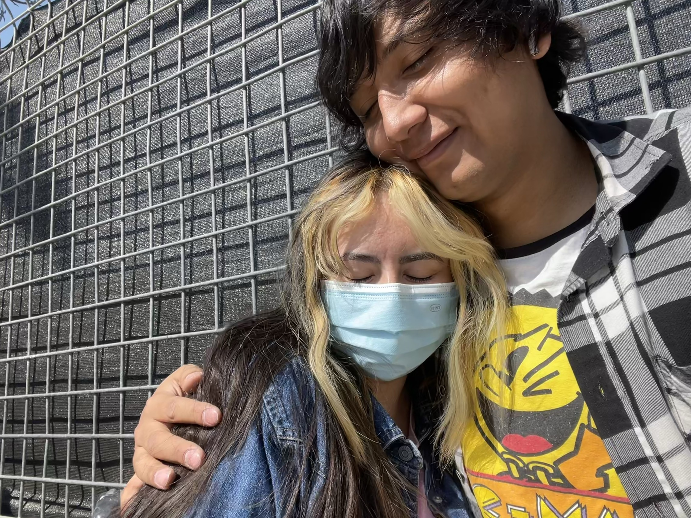
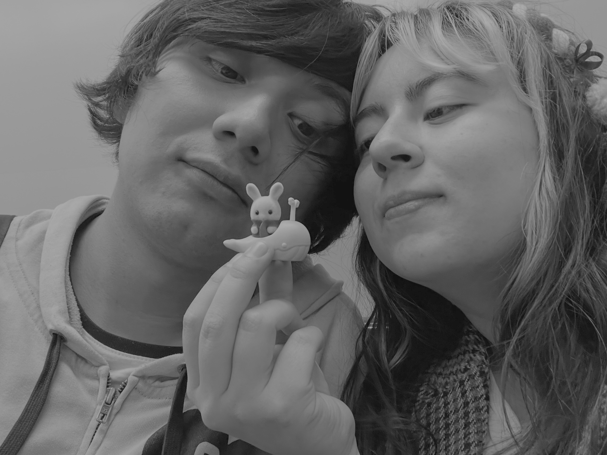

Ya pasaron 2 años desde la vez que me preguntaste si quería ser tu novia -desde un sentido no posesivo-; y me parece increíble lo mucho que ha pasado, lo bueno, lo malo, lo maravilloso y lo peor. Te agradezco por todo lo que hemos compartido pues de cada momento se aprende y sobretodo se vive y, para mi eso es de lo que más aprecio.
Me gusta verte feliz y sonreír, cómo se marca tu sonrisa y se hacen pequeños tus ojitos; me agrada poder acompañarte cuando no estás bien aunque no pueda hacer algo pero que sepas que ahí estaré.
Espero poder crecer contigo, que la vida, el tiempo y las circunstancias nos permitan seguir compartiendo instantes que con el tiempo serán recuerdos dulces, amargos, intensos pero siempre memorables.
Sé que vas a alcanzar lo que quieras poco a poco, y también quiero que estés cuando yo lo haga.
Ti amo mucho mi lluvia de flores hasta que mi mente te recuerde e incluso si me falla sé que estarás ahí y con sólo verte lo haré.
 